| SOURCE | TITLE| IMAGE MATCH | click to source page |
| eBay | Vietnam War 2000 US Warplane Shot Down stamp 1967 A-2 | eBay | 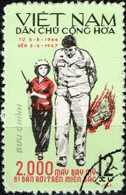 |
| eBay | 2000th US aircraft brought down over North Vietnam. VIET NAM 1967 | eBay | 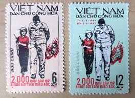 |
| eBay | 1967 North Vietnam Stamps 2000th US Aircraft Shot Down Scott # 461-462 MNH | eBay | 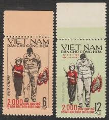 |
| eBay UK | 1967 North Vietnam Stamps -2000th US Aircraft shot Down CTO set of 2 - Sc#461-2 | eBay UK | 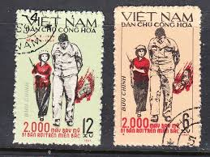 |
| Cooperative Extension Foundation | What Does FREEDOM Mean To You? | Connect | 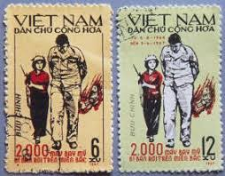 |
| TRUMP'LA YOL YÜRÜMEK! Şimdi bütün bunlara bakınca Trump'ın ve temsil ettiği güçlerin, coğrafyamızı da yakından ilgilendiren yeni bir oyun kurmaya çalıştığı görülüyor. Olabilir, keyif onların elbette. Fakat bu gayrete bakıp da susmuyor | 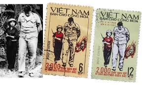 | |
| X | 外国切手㊷ 1967年に北ベトナムが発行した米軍機2000機撃墜記念切手である。 ベトナムの女性兵士が大柄の米軍捕虜を連行する報道写真を基に描かれている。ここに描かれている2人は1995年に再会を果たしている。#外国切手 | 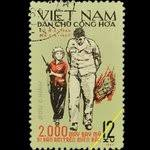 |
| Prisionero en Argentina | El rescate más largo | Prisionero en Argentina | 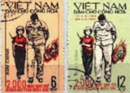 |
| eBay | 1967 North Vietnam Stamps Block 4 2000th US Aircraft Shot Down Scott # 461-462 | eBay | 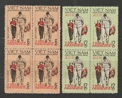 |
| eBay | Historical Events Vietnamese Stamps for sale | eBay | 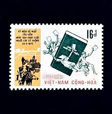 |
| Stamp Community Forum | Vietnam Postal History During The Vietnam War - Page 8 - Stamp Community Forum | 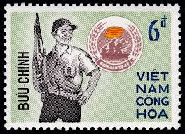 |
| Alamy | VIETNAM - CIRCA 1968: a stamp printed in Vietnam shows Asian, African and Latin American soldiers, foreign solidarity with Vietnam, circa 1968 Stock Photo - Alamy | 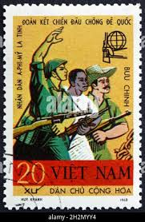 |
| eBay | South Vietnam 1967 (398) Education | eBay | 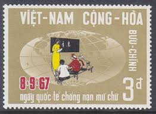 |
| Stamp Community Forum | Vietnam Stamps And Philatelic Items - Stamp Community Forum | 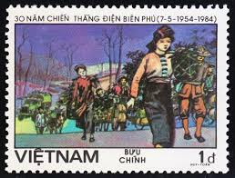 |
| eBay | SOUTH VIETNAM 1969 Pacification Campaign 347-348 Chiến Dịch Chiêu Hồi MNH | eBay | 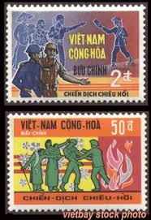 |
| eBay | 1989 Vietnam Stamps Nati. Day of Cambodia, 10th Scott # 1932-1933 Imperf MNH | eBay | 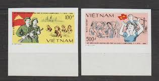 |
| eBay | 65421] Vietnam South 1967 Literacy Day MNH | eBay | 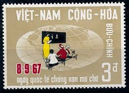 |
| eBay | Vietnam War Viet Kong Buttle against US Army stamp 1965 | eBay | 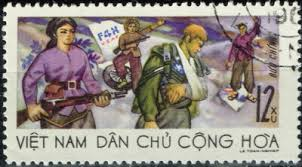 |
| vietbay.com | vietbay.com: South Vietnam Stamps 1972 Civillian Self-Defense Force 428-430 | 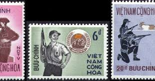 |
| seemystamps.com | See My Stamps! - A Place to Show Off Your Stamp Collection | Page 47 | 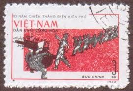 |
| eBay | Postage Stamps For Crafting: 1960 8c Thomas Masaryk; Multi-Color; 50 Copies | eBay | 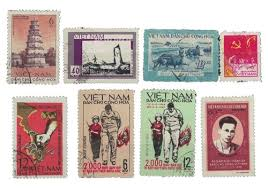 |
| Stamp Community Forum | Vietnam Postal History During The Vietnam War - Page 9 - Stamp Community Forum | 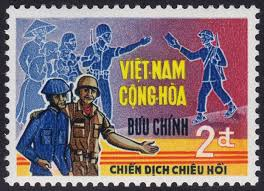 |
| eBay | R4721 Vietnam 1973 Liberated family 1v. MNH | eBay | 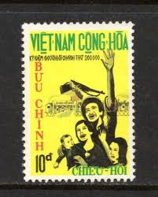 |
| Amazon.com | Amazon.com: Vietnam Stamps - 1959, Sc 109, VN Code # 61, 15th Founding anniv. of Vietnamese People?????s Army, MNH, F-VF : Toys & Games |  |
| eBay | 1967 International Literacy Day,school,teacher,pupil,class,Vietnam,Mi.398,MNH | eBay | 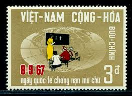 |
| Stamp Bears | Vietnam Stamps by tomd | Stamp Bears | 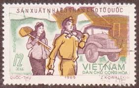 |
| Stamp Bears | Vietnam Stamps by tomd | Stamp Bears |  |
| eBay | Vietnam SC 444 MNH (9gfw) | eBay | 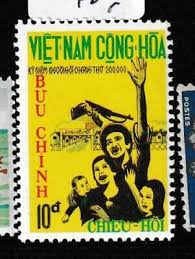 |
| eBay | N.399-Vietnam- National Defense | eBay | 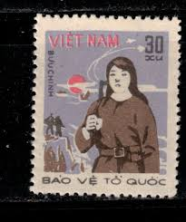 |
| eBay | Vietnam Scott #M42 Military 1986, Sheet of 90 | eBay | 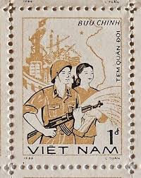 |
| Dreamstime.com | Postage Stamp Printed in Vietnam Shows Lenin, Revolutionary Soldiers, 50th Anniversary of Great October Revolution 1917 - 1967 Editorial Image - Image of 1917, letter: 169951090 | 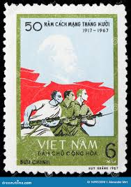 |
| eBay | Vietnam Russian Bolshevik Revolution Leader Lenin and Sailors stamp 1965 | eBay | 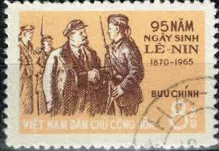 |
| eBay | Mint No Gum/MNG Vietnamese Stamps for sale | eBay | 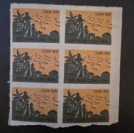 |
| WordPress.com | Republic of Vietnam Historical Society Blog | Dedicated to the history of the Republic of Vietnam 1955-1975 | Page 2 | 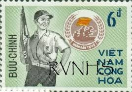 |
| eBay | N.180 -Vietnam- 5th Anniv of South Vietnam National Front For Liberation | eBay | 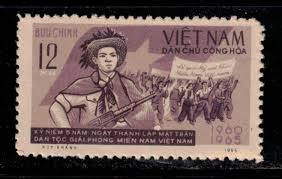 |
| seemystamps.com | See My Stamps! - A Place to Show Off Your Stamp Collection | Page 18 | 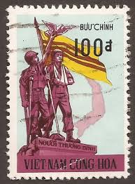 |
| eBay | N.182-Vietnam- 20th Anniv of 1st Vietnamese National Assembly Election | eBay | 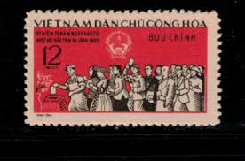 |
| eBay | Vietnam 1960 Military stamp SPECIMEN mint NGAI | eBay | 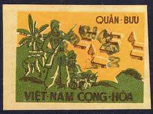 |
| Pictorem | Vitaliy Borisov Art Collection | 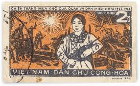 |
| Poppe Stamps | Poppe Stamps: Vietnam (Socialist Republic), 1985, 860, Policemen, Presidents, Anniversary, People - stamps for sale by theme and country | 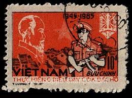 |
| eBay | South Vietnam 1966 revolution - one stamp soldier - MH | eBay | 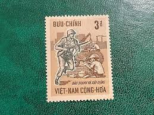 |
| eBay | VIET NAM (SOUTH) SCOTT# 439-440 MNH VICTORY BINH-LONG | eBay | 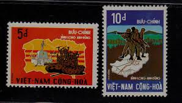 |
| eBay | [94837] Vietnam 1989 National Day Women in the Navy MNH | eBay | 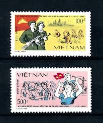 |
| eBay | VIETNAM, South 1972 100d Used Veteran Memorial Mi 516 Scott 438 XF 7998 | eBay | 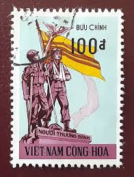 |
| eBay | Vietnam 1969 #358-61 General Mobilization - MNH | eBay | 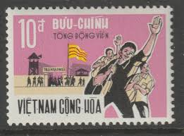 |
| eBay | 1962 North Vietnam Stamps War for Reunification Scott # 217 MNH | eBay | 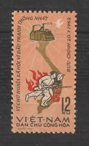 |
| eBay | S2415 Vietnam 1985 End of WWII IMPERF 4v. MNH | eBay | 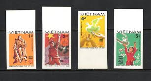 |
| eBay | Vietnamese First Day Covers for sale | eBay | 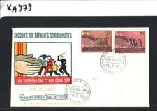 |
| Alamy | VIETNAM - CIRCA 1973: A stamp printed in Vietnam shows white rose, circa 1973 Stock Photo - Alamy | 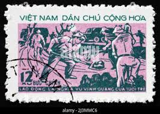 |
| Etsy | Vietnamese Art Print of Propaganda Poster or Boho Art Print for Asian Live Matter. Vietnam Art Print, Asian Art. Graphic Art Print, Pop Art. - Etsy | 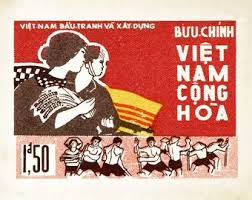 |
| eBay | Vintage stamps, Lot of 5, used, Vietnam, Dan Chu Cong Hoa, 12xu, 20xu, 30xu | eBay | 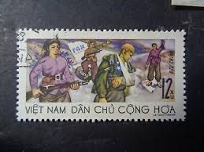 |
| ProBoards | Vietnam : Stamps. | The Stamp Forum (TSF) | 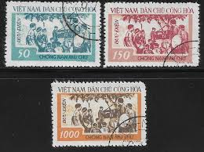 |
| eBay | 1966 Vietnam FDC First Day Cover Saigon Relief for Communist Refugees | eBay | |
| eBay | N.Vietnam MNH Sc 1596-97 Mi 1654-55 Value $ 2.25 US $ Election | eBay | |
| Alamy | VIETNAM - CIRCA 1969: a stamp printed in Vietnam shows insurgents and destroyed US armor, Tay Ninh, victory in South Vietnam, circa 1969 Stock Photo - Alamy | |
| Pin by tracy on Stamps of Europe in 2025 | Stamp, Postage stamp art, Isle of man | ||
| eBay | Vietnam War Army battle Tank stamp 1968 A-2 | eBay | |
| 83 khmer history ideas to save today | history, cambodia, angkor and more | ||
| seemystamps.com | See My Stamps! - A Place to Show Off Your Stamp Collection | Page 21 |